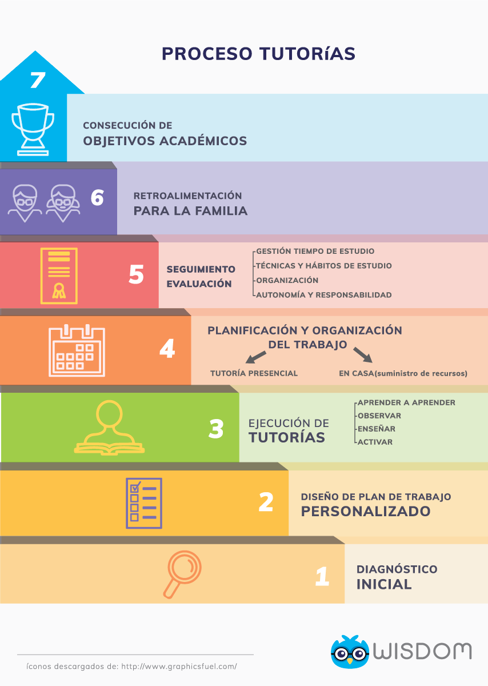

QUIENESSOMOS
Somos un equipo de educadores profesionales con más de 10 años de experiencia en educación personalizada y apoyo escolar en clases particulares para niños, adolescentes y jóvenes.
En el desarrollo de nuestra labor hemos evidenciado las grandes necesidades y problemáticas educativas que están enfrentando nuestros estudiantes. En primer lugar, el bajo rendimiento escolar al presentar dificultades de aprendizaje en matemáticas, física, química, inglés, francés, español, baja competencia en lectoescritura, entre otros.
En segundo lugar, la necesidad de un acompañamiento idóneo en el desarrollo de tareas, proyectos y buen desempeño en evaluaciones.
Por lo tanto, hemos desarrollado la metodología de aprendizaje WISDOM, Tutorías, Idiomas y Servicios Educativos, la cual brinda soluciones a las necesidades y problemáticas educativas que están enfrentando nuestros estudiantes, las cuales requieren un apoyo escolar extra, para nivelarse en los temas o materias que presentan dificultad y así mejorar su rendimiento académico.
QueHacemos
-
Tutoría de inglés

¿Necesitas que tus hijos aprendan Inglés?
Ser bilingüe es esencial en el mundo globalizado, lo cual hace que el aprendizaje de una lengua extranjera sea vital. El inglés es indudablemente el lenguaje común que permite a niños, niñas y jóvenes tener mayor acceso al mundo de hoy con su gran conectividad e interculturalidad. Aprender un segundo idioma en la infancia o adolescencia prepara a tu pequeño para vivir muchas experiencias enriquecedoras a lo largo de su vida. Ofrecemos tutorías de inglés personalizadas en la comodidad de tu casa, las cuales están alineadas con las necesidades específicas de cada estudiante.
En nuestras tutorías, los estudiantes deben hacer sus tareas, trabajos o proyectos de aula, en un contexto de inmersión en inglés, teniendo en cuenta sus gustos y preferencias, como ver películas, leer libros, jugar y usar recursos tecnológicos entre otras. En nuestras tutorías nos comunicamos en inglés, escribiendo en inglés y así, nuestros estudiantes practiquen y mejoren sus competencias en diferentes contextos de su vida real y académica.
-
Tutoría de matemáticas
¿Tus hijos tienen problemas y dificultades en el aprendizaje de las Matemáticas?
Las experiencias de las matemáticas escolares no es fuente de satisfacción para muchos niños y adolescentes. Algunos se sienten frustrados al no poder solucionar los problemas de esta asignatura. Nuestros tutores de matemáticas son apasionados por la enseñanza y siempre están en la búsqueda de estrategias innovadoras y didácticas en nuestras tutorías, para que nuestros estudiantes puedan superar estas dificultades con mayor facilidad. Al implementar el coaching educativo en las tutorías de matemáticas, nuestros tutores establecen un plan personalizado, logrando tener un mayor conocimiento de los procesos internos de aprendizaje de los niños o adolescentes, asegurando que cada principio o concepto ha sido completamente aprendido.
Nuestros niños y adolescentes dejan su rol pasivo de aprendizaje en el aula y se convierten en descubridores del mundo de las matemáticas, guiados por nuestros tutores. En Wisdom, las matemáticas son vivenciales, se descubren con el movimiento, con la manipulación de objetos, formas geométricas, elementos de la naturaleza y luego se aprenden los principios en el papel a través del desarrollo de problemas abstraídos de su contexto real o en el desarrollo de sus deberes escolares, talleres o guías de matemáticas a presentar en sus colegios.
-

¿Cómo lo hacemos?
Teniendo metodologías diseñadas, adaptadas y ejecutadas en nuestras tutorías, que van alineadas con las necesidades puntuales de nuestros estudiantes, sus familias y colegios.
Nuestro know how ("saber cómo o saber hacer"); está fundamentado en la aplicación de la pedagogía del aprendizaje basado en tareas, junto con la implementación de herramientas significativas del coaching educativo, para apoyar a nuestros estudiantes en las dificultades de aprendizaje que pueden presentar en algún momento de su vida escolar.
No nos limitamos únicamente a enseñar un tema o idioma en particular, aprovechamos esa falencia como vehículo para incorporar el coaching académico en nuestras tutorías. Esta herramienta nos permite ayudar a tu hijo a desarrollar sus habilidades académicas y personales; para que logren ser más efectivos en sus estudios actuales y futuros.
En Wisdom creemos que es importante evolucionar constantemente nuestros procesos educativos y así adaptarnos a las necesidades y retos de la vida moderna, por esto involucramos las nuevas tecnologías de la información y comunicación como aliadas en nuestros sistemas, en sincronía con los diferentes modelos pedagógicos existentes.
NUESTRAS METODOLOGÍAS

Es un modelo de educación innovador, una forma diferente de entender el concepto de aprendizaje donde se aplican las bases del coaching, para liberar el potencial de nuestros estudiantes y así incrementar su desempeño al máximo, ayudándolos a aprender a aprender.
El coaching, en general, es un método que consiste en acompañar, instruir o entrenar a una persona para alcanzar unos objetivos, usando sus propios recursos y habilidades fuertemente apoyados en la motivación, responsabilidad y creatividad
Implementamos el coaching académico en particular, en el diseño de nuestra metodología de enseñanza para que nuestros estudiantes hagan algo más que solucionar una dificultad académica específica o acumular información. Ya que de la mano de nuestros profesores y las tutorías, se llevan a cabo cambios de profundidad y transformaciones que permiten dar a nuestros estudiantes las capacidades para continuar creciendo y tomar un papel proactivo y responsable en sus resultados académicos.
¿Porque es una herramienta idónea en el aprendizaje de tus hijos?
Porque profundiza y busca mejorar en nuestros estudiantes aspectos tan importantes como:
- Optimizar gestión del tiempo de estudio
- Aplicar técnicas de estudio
- Organización y planificación de trabajos, proyectos, tareas y exámenes.
- Generar autonomía y responsabilidad en el cumplimiento de las metas
El coaching académico es adaptable a cualquier clase de material escolar, de las asignaturas o temas que requieren refuerzo y con ellas se establece un plan de trabajo y objetivos
Al terminar la tutoría y el coaching académico, el tutor y el estudiante programan en conjunto que es lo que se debe hacer en casa antes de la próxima sesión y con qué recursos se cuenta para tal fin. Esto requiere la coordinación y comunicación con las familias para poder informar cómo se está desarrollando el proceso.Asimismo se exploran además aspectos personales tan importantes como la motivación, autoestima y actitudes ante los estudios.

¿Porque es un método ideal para aplicar en nuestras tutorías?
Este modelo aboga por cambiar el concepto tradicional de la enseñanza basado en el tutor o profesor, a que el estudiante sea el protagonista de su aprendizaje. El rol del profesor es el de acompañar y orientar el trabajo de la tutoría, preguntar e intercambiar ideas, para conducir a la cooperación activa con el estudiante, movilizando su entusiasmo y así propiciar su creatividad y el desarrollo de habilidades prácticas.
Este método es un complemento ideal para cursos presenciales, pues su objetivo es lograr un proceso de enseñanza-aprendizaje en el cual sea posible prestar atención a las individualidades, lograr la motivación hacia los temas tratados por la asignatura y la consecución exitosa de un objetivo académico.

Promover la organización de las tutorías en función de un conjunto de tareas o una tarea específica, para que el estudiante tenga la posibilidad de aprender no solo por medio de la transmisión de conocimiento por parte del tutor, quien va a ser un facilitador en el proceso, sino también que el mismo tenga una posición activa en la construcción de sus conocimientos.
Por lo tanto el estudiante va adquiriendo responsabilidad con su aprendizaje progresivamente, lo cual facilita su motivación.

Nuestros Tutores
Nuestro equipo está conformado por un grupo selecto de profesores apasionados por la educación de nuestros niños, adolescentes y jóvenes. Son tutores innovadores, que motivan y acompañan a tus hijos a superar sus dificultades de aprendizaje que frenan su rendimiento escolar
Nuestros tutores están capacitados y entrenados en coaching educativo, lo que les permite orientar a tus hijos para que liberen todo su potencial; ayudándoles a aprender a aprender, y tomar un rol proactivo y responsable en sus resultados académicos.
El papel del tutor resulta fundamental para el desarrollo de la metodología de las tutorías pues es el facilitador del aprendizaje hacia la resolución de los problemas, en donde los estudiantes desarrollan su pensamiento crítico, siendo más conscientes acerca de su proceso de aprendizaje, y así ampliar su visión del mundo.
Tenemos tutores para Clases a domicilio en áreas como matemáticas, inglés, español, química, acompañamiento de tareas, proyectos, preparación de exámenes y refuerzo escolar.
Ofrecemos un espacio significativo de aprendizaje donde padres, estudiantes y tutores se vinculan, conformando una Comunidad de Aprendizaje Wisdom, con un interés común: el éxito académico de nuestros estudiantes o hijos.
Realizamos un proceso serio de selección donde verificamos idoneidad y antecedentes de nuestros postulantes para tu seguridad y la de tu familia
Planes y Beneficios
Nuestros estudiantes no solo se favorecen al superar una dificultad académica, sino que al recibir y al aprender a usar efectivamente todas las herramientas personales combinadas con buenas prácticas de estudio, ellos tienen lo que se requiere para que puedan obtener su mejor rendimiento académico. Así, las familias pueden tener la tranquilidad de que sus hijos serán estudiantes autónomos y responsables que podrán aplicar lo aprendido por el resto de sus vidas.
Nuestra hora cátedra es de 60 minutos, por lo que si pagas por una hora $55.000, eso es lo que obtienes. Adicional tienes la opción de escoger entre tomar una sola tutoría de mínimo 1 hora y 30 minutos, o puedes escoger entre nuestros planes:
-
12 HORAS AL MES
2 SESIONES DE 1 HORA Y MEDIA
$600.000
- 12 horas
- Valor hora $ 50.000
-
18 HORAS AL MES
3 SESIONES DE 1 HORA Y MEDIA
$810.000
- 18 horas
- Valor hora $45.000
-
24 HORAS AL MES
3 SESIONES DE 2 HORAS
$960.000
- 24 horas
- Valor hora $40.000
Si ninguno de nuestros planes se acomoda a tus necesidades, contáctanos y te ayudamos a armar el plan a tu medida.
Condiciones Servicios Educativos
- Pago anticipado según las horas programadas
- Medios de pago: Débito en línea por PSE, transferencias o consignación bancaria
- Las tutorías que se cancelen deberán reprogramarse dentro del mismo mes para el que estaban programadas. De no ser así la clase caduca y no podrá reprogramarse
- Siempre debe haber un adulto responsable en casa, para que el tutor ingrese y dicte la tutoría
Familias felices


Con el apoyo de
Contacto
- Cel: 310 7874468
- Email: info@wisdom.com.co
- Bogotá,Colombia
Redes sociales
Trabaja con nosotros
Agradecemos tu interés.
Eres una persona íntegra, puntual y te apasiona la enseñanza? Te gusta trabajar con niños
y jóvenes? Tienes los conocimientos, la experiencia, la disposición para transportarte y la
disponibilidad de tiempo en las tardes para dar las clases a domicilio?
Si es así, siempre estamos en la búsqueda de nuevos talentos que se unan a nuestro
equipo.
Envíanos tu hoja de vida a: recursoshumanos@wisdo.com.co y te contactaremos!